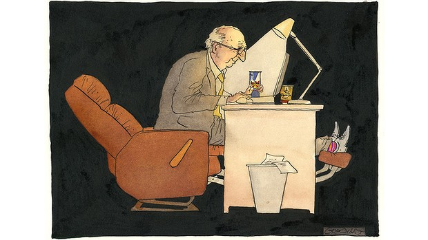

Older generation more than paying its way
Date May 26, 2014 - 9:57PM
Patricia Edgar

Illustration: Matt Golding
It is not unreasonable to suggest eligibility for the old age pension should be 70 years. It is after all more than 100 years since the old age and invalid pensions were introduced at age 65 for men and 60 for women. In that time we have become fitter and healthier and our life expectancy has increased by 35 years.
Working longer is not the problem. The problem is the discrimination, abuse and failure to acknowledge the contribution the ageing population has made and is making to the society that accompanies this announcement.
Increasingly people want to work as they get older. ABS data show only 13 per cent of workers plan to retire by 60. Those who say they will never retire have gone from 384,000 to 575,000. Able-bodied people don't want to sit around for what is shaping up to be possibly the longest stage of their lives without contributing.
But discrimination is keeping them out of the paid workforce where Joe Hockey says they must be. There are significant barriers that older Australians face when they look for meaningful work. HR managers have bought into the ageing stereotypes, preferring younger employees and targeting those over 50 for redundancy. Some of the myths that surround older workers are that they will cost a business more for their experience; there is no long-term benefit to their training and development; younger workers are better performers; mature age workers won't be able to adapt to changes and new technology and they will be prone to health problems.
ABS and OECD data prove these assumptions false. Mature age employees can save costs to employers through increased rates of retention. The data show workers aged over 55 are five times less likely to change jobs compared with workers aged 20-24 thus reducing ongoing recruitment and training costs. Also their rates of absenteeism are lower, so there is a greater investment return on their training. Retention of mature age workers can help maintain corporate memory and there is a strategic business advantage in having employees who reflect the diversity of the customer base as the Australian population ages.
OECD research shows that those countries that provide a higher level of training to older workers have workers leaving the labour market at an older age, thus there is long-term benefit to their training and development. Verbal skills, communication and intelligence remain unchanged as a person ages so experience is a better indicator of productivity than age.
Australians aged 55-64 are the fastest growing users of information technology and appropriate training provided in a supportive environment can greatly assist older workers to learn new technology systems effectively. As well, the ABS data shows mature age workers are less likely to take sick leave and experience work-related injuries than younger workers. Payment of a bonus by government to encourage employment of older workers (The Age 26/5/14) shows recognition of the problem. But much more is needed to shift the deep-seated cultural bias reflected in employers' attitudes towards the aged.
Alongside the pervasive discrimination against older people in the workforce there is a lack of recognition of the significant work that the over 65s already do as volunteers and the value of that work to the Australian economy. The Treasurer should realise social capital is a major contribution to what Treasury narrowly defines as the economy. But when Joe Hockey says people should work as long as they can he discounts this significant contribution. Treasury should do some sums on the social capital that volunteer work produces and how that impacts on our economy.
Those over 55 contribute the staggering sum of $74.5 billion a year through caring for spouses and grandchildren and in other unpaid voluntary work, which allows others to work. Women aged 65 to 74 contributed $16 billion in unpaid work inside and outside the home; men of that age, who are fewer in number, contributed another $10.3 billion.
Dr Lisel O'Dwyer, a senior research associate in the University of Adelaide published a study in 2012 estimating the monetary value of the work done by the 6.4 million people who volunteer their time in Australia. She estimates that value as more than $200 billion a year, outstripping revenue sources from mining, agriculture and the retail sector. The study suggested that even a 1 per cent increase in social capital (including volunteering) was likely to lead to falls in homicides, sexual assaults, burglaries and vehicle thefts.
More and more retirees are finding purpose in volunteering and caring and their contribution is highly relevant to this debate about who is deserving of a pension. Volunteers get satisfaction from helping others, enhancing the quality of their life and their health. They are healthier, fitter, more mentally alert and more socially connected than other people as a result and the payback to the economy and workplace is massive. The cost of a pension to such people is an investment in the social order.
And it's time for the abuse to stop. The baby boomers are not ''the pampered generation'' (Ryan Heath, The Age May 16) swindling their children of education and housing. They are in fact sandwiched between their parents and their children and in the main fulfill their obligations to both, having paid their taxes and paid their Medicare Levy in advance of ill health without resorting to tax minimisation schemes.
To be lectured at, by a cigar chomping Treasurer and sneering, winking Prime Minister, telling us ''the age of entitlement is over'' engenders frustration and fury.
Mrs Power and Ms Ward, who took the Prime Minister to task are only the first of a growing number of pensioners who will do so. They are mad as hell and are not going to take it anymore. We are all in this together, Abbott and Hockey, and we pay your salaries. There are more constructive and equitable ways forward and it is your job to find them.
Patricia Edgar Is the author of In Praise of Ageing. She is an ambassador for the National Ageing Research Institute.